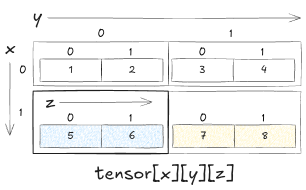

# 배열 생성 (크기 고정)
import array
arr = array.array('i', [1, 2, 3, 4, 5]) # 'i'는 정수형 배열을 의미
print(arr)array('i', [1, 2, 3, 4, 5])배열(Array)은 같은 데이터 타입의 요소들이 연속적으로 저장된 데이터 구조이다. 배열은 각 요소에 인덱스(index)를 통해 접근할 수 있으며, 이 인덱스는 일반적으로 0부터 시작한다(인덱스 시작 기준에 따른 프로그래밍 언어 분류 참고).
배열 구조는 연속된 공간에 동일한 데이터 타입을 갖는다.
배열은 생성 시 크기가 고정되며, 한 번 크기가 정해지면 변경할 수 없다. 이로 인해 메모리 관리가 효율적이지만, 크기를 미리 예측해야 하는 단점이 있다.
# 배열 생성 (크기 고정)
import array
arr = array.array('i', [1, 2, 3, 4, 5]) # 'i'는 정수형 배열을 의미
print(arr)array('i', [1, 2, 3, 4, 5])배열의 각 요소는 인덱스를 통해 O(1)의 시간 복잡도로 직접 접근할 수 있다.
# 배열 요소 접근
print(arr[0]) # 첫 번째 요소 출력: 1
print(arr[3]) # 네 번째 요소 출력: 41
4가장 기본적인 형태로, 일렬로 나열된 데이터의 집합이다.
# 1차원 배열
arr = array.array('i', [10, 20, 30, 40, 50])
print(arr[2]) # 출력: 3030행(row)과 열(column)로 구성된 배열로, 테이블 형태의 데이터를 표현할 때 사용된다. 파이썬에서는 리스트의 리스트로 표현할 수 있다.
# 2차원 배열
matrix = [
[1, 2, 3],
[4, 5, 6],
[7, 8, 9]
]
print(matrix[1][2]) # 2번째 행, 3번째 열의 값 출력: 66
2차원 배열을 확장한 구조로, 3차원 이상의 복잡한 데이터를 저장할 때 사용된다. NumPy 라이브러리를 활용하면 쉽게 다차원 배열을 다룰 수 있다.
import numpy as np
# 3차원 배열 생성
tensor = np.array([
[[1, 2], [3, 4]],
[[5, 6], [7, 8]]
])
print(tensor[1][0][1]) # 출력: 66배열의 특정 위치에 요소를 추가하는 작업이다. 배열의 크기가 고정된 경우, 삽입 시 요소를 이동시켜야 한다.
# 배열에 값 삽입
arr.insert(2, 25) # 인덱스 2에 25 삽입
print(arr) # 출력: array('i', [10, 20, 25, 30, 40, 50])array('i', [10, 20, 25, 30, 40, 50])배열에서 특정 요소를 제거하는 작업이다. 삭제 후 나머지 요소를 이동시켜야 한다.
# 배열 요소 삭제
arr.remove(25) # 값 25 삭제
print(arr) # 출력: array('i', [10, 20, 30, 40, 50])array('i', [10, 20, 30, 40, 50])배열에서 특정 값을 찾는 작업이다. 배열은 선형 검색(linear search)을 통해 O(n) 시간 복잡도로 검색할 수 있다.
# 배열에서 값 검색
index = arr.index(40) # 값 40의 인덱스 찾기
print(index) # 출력: 33배열의 특정 인덱스에 저장된 값을 변경하는 작업이다. 인덱스를 통한 접근 덕분에 수정은 O(1) 시간 복잡도로 수행된다.
# 배열 요소 수정
arr[1] = 15 # 인덱스 1의 값을 15로 변경
print(arr) # 출력: array('i', [10, 15, 30, 40, 50])array('i', [10, 15, 30, 40, 50])| 장점 | 단점 |
|---|---|
| 인덱스를 통한 빠른 접근 속도 (O(1)) | 고정된 크기로 인해 유연성 부족 |
| 메모리 상에 연속적인 저장으로 캐시 효율성 높음 | 삽입/삭제 시 많은 요소 이동 필요 |
| 단순한 구조로 구현 및 이해가 쉬움 | 검색 속도가 느릴 수 있음 (O(n)) |
배열을 활용하여 학생들의 점수를 저장하고, 평균을 계산하는 간단한 프로그램이다.
# 학생 점수 평균 계산
scores = array.array('i', [85, 90, 78, 92, 88])
# 총합과 평균 계산
total = sum(scores)
average = total / len(scores)
print(f'총합: {total}, 평균: {average}')총합: 433, 평균: 86.6배열에 저장된 값들 중 최대값과 최소값을 찾는 예제이다.
# 최대값과 최소값 찾기
max_score = max(scores)
min_score = min(scores)
print(f'최대 점수: {max_score}, 최소 점수: {min_score}')최대 점수: 92, 최소 점수: 782차원 배열을 활용하여 행렬 덧셈을 수행하는 예제이다.
# 행렬 덧셈
matrix1 = [
[1, 2],
[3, 4]
]
matrix2 = [
[5, 6],
[7, 8]
]
# 두 행렬의 덧셈 결과 저장
result = [
[matrix1[i][j] + matrix2[i][j] for j in range(2)]
for i in range(2)
]
print(result) # 출력: [[6, 8], [10, 12]][[6, 8], [10, 12]]배열은 단순하면서도 강력한 자료구조로, 다양한 프로그래밍 문제에서 활용된다. 특히 데이터의 크기와 접근 방식에 따라 배열의 장점을 극대화할 수 있다.
| 인덱스 0부터 시작하는 언어 | 인덱스 1부터 시작하는 언어 |
|---|---|
| C | Fortran |
| C++ | MATLAB |
| Java | Lua |
| Python | R |
| JavaScript | Julia |
| Ruby | COBOL |
| Swift | Smalltalk |
| Go | Pascal (일부 구현체) |
| Kotlin | Visual Basic |
| PHP | ALGOL |
| Rust | Ada |
| TypeScript | Mathematica |
설명
언어에 따라 인덱스 시작 방식을 다르게 설정할 수 있는 경우도 있으며, 사용자 설정에 따라 인덱스를 변경할 수 있는 언어도 있다.